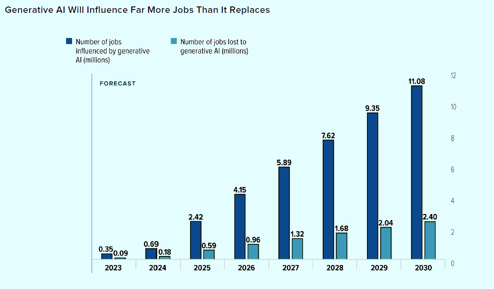

Future of Generative AI
The adoption of generative AI will eliminate 2.4 million jobs by the end of the decade but will reshape more than 11 million.
Virtual assistants like Siri and Alexa.
Recommendation systems used in e-commerce platforms.
Fraud detection in financial institutions.
Autonomous vehicles.
NLP for chatbots and customer service.
Image and facial recognition in security systems.
Medical diagnosis and healthcare systems.
Possibilities of Generative AI
One area that is widely believed to have a lot of potential is healthcare.
AI-powered diagnostic tools can help doctors and healthcare professionals make
more accurate diagnoses and provide more personalized treatment options for patients.
Some companies are also exploring the use of AI-powered robots and other machines to
perform surgeries and other medical procedures.
In the field of education, AI-powered solutions can help students learn more effectively and efficiently.
Assess students' progress and adjust the course material to meet their needs. AI-powered tutors can also provide personalized learning experiences and feedback to students.
Another area where AI can have significant impact is in the realm of customer service.
Many companies are already using AI-powered chatbots and virtual assistants to provide automated assistance to customers.
Finally, there are many possibilities in the field of mobility and transportation.
Self-driving cars, buses, and other vehicles powered by AI are already being tested and deployed in some parts of the world.
Forcast of influence on AI by 2030
- 2023: Number of jobs influenced - 350,000 VS Number of jobs lost - 90,000
- 2024: Number of jobs influenced - 690,000 VS Number of jobs lost - 180,000
- 2025: Number of jobs influenced - 2,420,000 VS Number of jobs lost - 590,000
- 2026: Number of jobs influenced - 4,150,000 VS Number of jobs lost - 960,000
- 2027: Number of jobs influenced - 5,890,000 VS Number of jobs lost - 1,320,000
- 2028: Number of jobs influenced - 7,620,000 VS Number of jobs lost - 1,680,000
- 2029: Number of jobs influenced - 9,350,000 VS Number of jobs lost - 2,040,000
- 2030: Number of jobs influenced - 11,080,000 VS Number of jobs lost - 2,400,000
